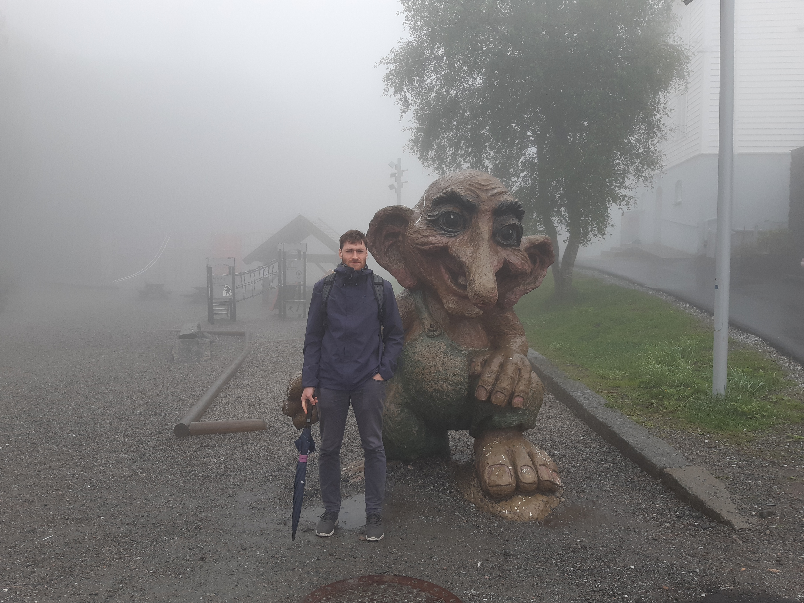

Welcome to my webpage!
I'm a postdoctoral researcher in applied mathematics. My research interests include geometric methods for fluid dynamics and other physical systems, stochastic modeling, and data assimilation. Broadly, I aim to develop and explore computational methods that leverage geometry, stochasticity, and data to improve accuracy and efficiency for predicting and understanding complex physical phenomena.
Currently, I'm based at Chalmers University of Technology (Sweden) in the group of Klas Modin, working on geometric numerical hydrodynamics. Prior to this, I completed my PhD at the University of Twente (The Netherlands) on stochastic computational models for geophysical fluid dynamics, under the supervision of Bernard Geurts.

Recent News
- Jul 08, 2025 — Paper "Probabilistic data-driven turbulence closure modeling by assimilating statistics" accepted for publication in the Journal of Computational Physics!
- Jun 09, 2025 — Paper "On spectral scaling laws for averaged turbulence on the sphere" accepted for publication in Physica D: Nonlinear Phenomena!
- Jun 02, 2025 — Paper "Casimir preserving numerical method for global multilayer geostrophic turbulence" accepted for publication in the Journal of Computational Physics!